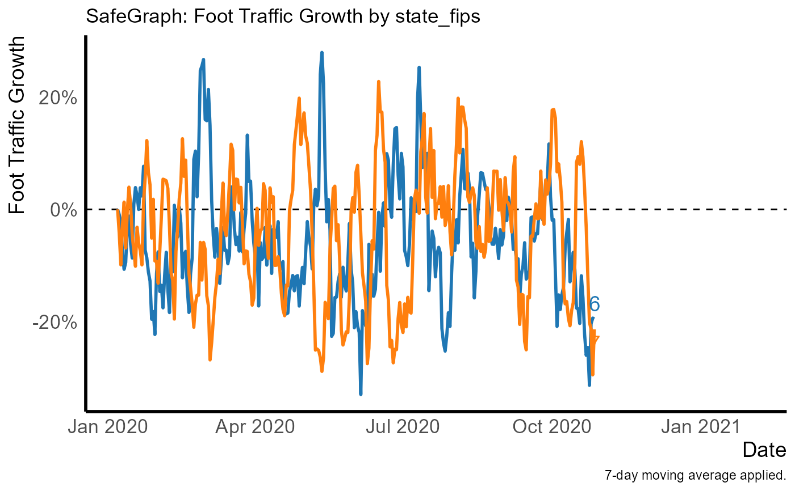

graph_template.RdProduces a line graph with labels at the end of the lines, with theming designed for the purpose. Returns a ggplot object that can be further modified as normal. Requires that the **ggplot2**, **ggrepel**, and **paletteer** packages be installed.
graph_template( dt, date = "date", growth = "growth", origin = 0, filter = NULL, by = NULL, x_title = "Date", y_title = "Foot Traffic Growth", title = ifelse(is.null(by), "SafeGraph: Foot Traffic Growth", paste0("SafeGraph: Foot Traffic Growth by ", paste(by, collapse = ", "))), caption = "7-day moving average applied.", subtitle = NULL, label = !is.null(by), hline = TRUE, expand_right = NULL, palette = "ggsci::category20_d3", manual_palette = NULL, skip_theming = FALSE, line_opts = list(size = 1), label_opts = list(size = 14/ggplot2::.pt, hjust = -0.2, vjust = 0.5, direction = "y"), hline_opts = list(size = 0.5, linetype = "dashed", color = "black") )
| dt | A |
|---|---|
| date | Character variable indicating the date variable (x axis). |
| growth | Character variable indicating the growth variable (y axis). |
| origin | The value indicating no growth/initial value. |
| filter | A character variable describing a subset of the data to include, for example |
| by | A character variable of the variable name to assign to the |
| x_title | Axis title for x-axis. |
| y_title | Axis title for y-axis. |
| title | Graph title. |
| caption | Figure caption. |
| subtitle | Graph subtitle. |
| label | Should a text label be applied at the end of each line? |
| hline | Should a horizontal line at the |
| expand_right | Number of additional days to extend the x-axis by so as to fit the labels. Defaults to adding 33 percent more days so a quarter of the graph is reserved for labels. |
| palette | Discrete color palette from the **paletteer** package to be sent to |
| manual_palette | Manually-specified color palette to be sent to the |
| skip_theming | Don't apply the template theming, so you can apply your own. |
| line_opts | A named list of options to be sent to |
| label_opts | A named list of options to be sent to |
| hline_opts | A named list of options to be sent to |
# Generally you'd be doing this with data that comes from read_many_patterns() # But here's an example using randomly generated data dt <- data.table::data.table(date = rep(lubridate::ymd('2020-01-01') + lubridate::days(0:300),2), state_fips = c(rep(6, 301), rep(7,301)), visits_by_day = rpois(602, lambda = 10)) norm <- data.table::data.table(date = rep(lubridate::ymd('2020-01-01') + lubridate::days(0:300),2), state_fips = c(rep(6, 301), rep(7,301)), total_devices_seen = rpois(602, lambda = 10000)) processed_data <- processing_template(dt, norm = norm, by = 'state_fips') p <- graph_template(processed_data, by = 'state_fips') p